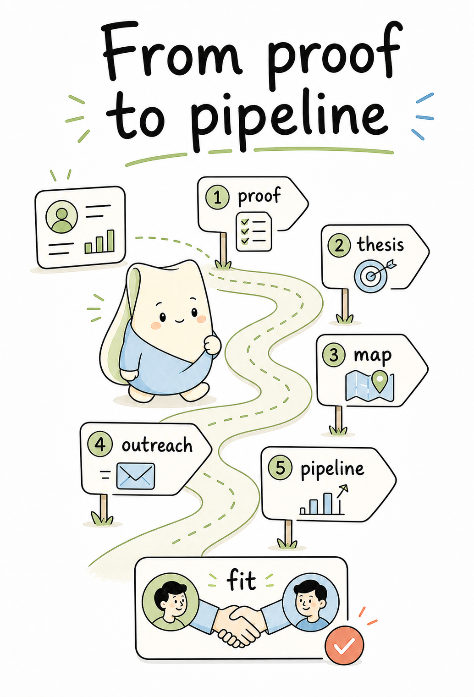
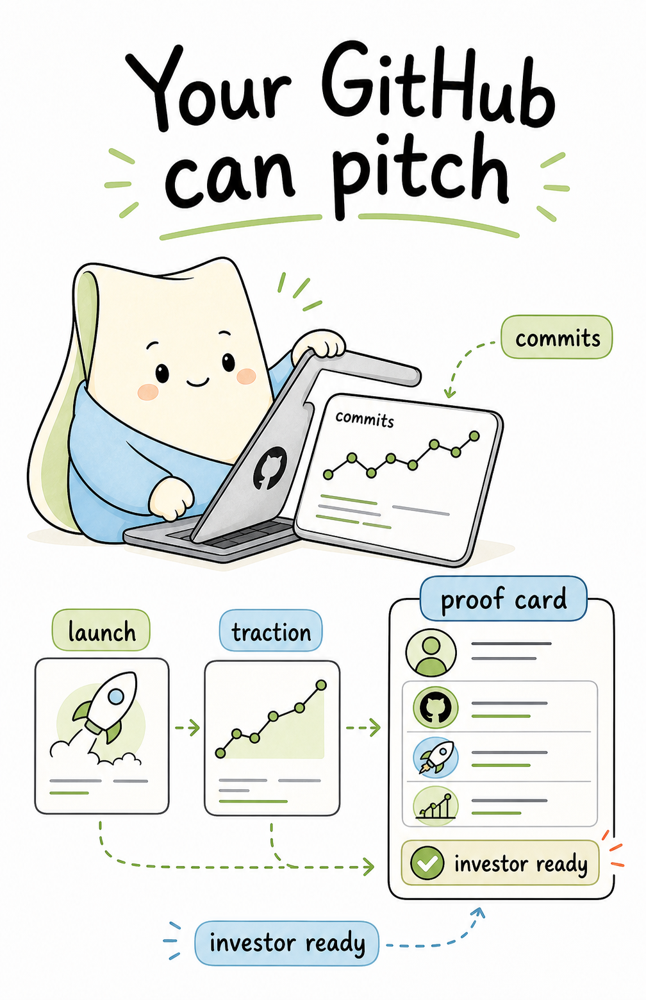

Fundraising problem
Stop turning every update into a cold pitch.

Apparent starts from the work founders are already doing.
Founder side
Proof stops getting lost.

Living profile
Launches, commits, customers, traction.

Investor side
Thesis filters the noise.

Fit loop
Proof creates context. Context creates fit.
The same story does not need to go to everyone.
Before the meeting
Investors see why it matters now.

Less noise. More signal. Better fit.
Apparent connects founder proof with investor thesis.